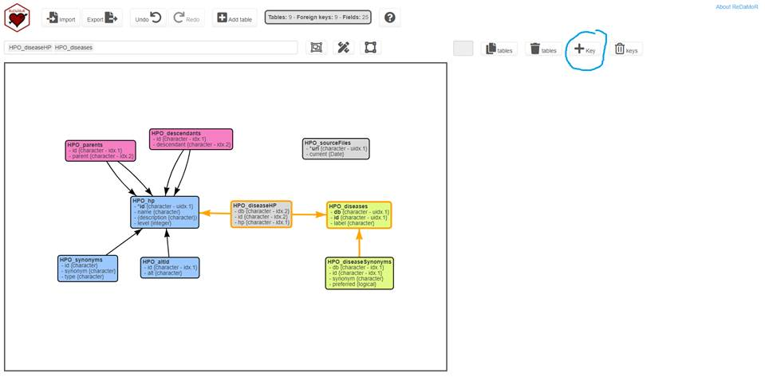

Modeling Relational Data in R with ReDaMoR
ReDaMoR version: 0.7.5
Patrice Godard
July 06 2024
Source:vignettes/ReDaMoR.Rmd
ReDaMoR.Rmd
Introduction
In R, data are often stored in data frames which are tables in which each row represents a record and each column a variable. Because data frames are highly used, they have been improved in different objects such as tibble, data.table or AnnotatedDataFrame.
However, in many projects, the data do not fit in only one table but they are organized in different data frames, each of them dealing with a specific concept. These tables are often related to each other by some variables. Depending on the diversity of the concepts, it can be difficult to remember what these tables represent and how they are connected. Fortunately, because they are tables, a set of data frames can be directly documented using a relational data model.
The datamodelr R package provides tools to document relational data. The generate data models are leveraged by the dm R package to interact more easily with relational data.
Here we present the ReDaMoR package which also allows the manipulation of relational data models in R but with an approach quite different from the one implemented in datamodelr. It provides functions to create, import and save relational data models. These functions are accessible through a graphical user interface made with Shiny.
The main features of ReDaMoR are the following:
- Create data model from scratch with a graphical user interface
- Save data model in a json format
- Import SQL data model generated with MySQL Workbench
- Document data types as R types (character, numeric, logical, …)
- Add comments to tables and fields to improve model documentation
- Check and auto-correct model constraints (types, keys, uniqueness, mandatory fields)
- Confront data to the model to check their compatibility
The ReDaMoR R package is licensed under GPL-3 and its source code is available on github.
Installation
From CRAN
install.packages("ReDaMoR")Dependencies
The following R packages available on CRAN are required:
- dplyr: A Grammar of Data Manipulation
- magrittr: A Forward-Pipe Operator for R
- visNetwork: Network Visualization using ‘vis.js’ Library
- readr: Read Rectangular Text Data
- shiny: Web Application Framework for R
- shinyjs: Easily Improve the User Experience of Your Shiny Apps in Seconds
- DT: A Wrapper of the JavaScript Library ‘DataTables’
- rintrojs: Wrapper for the ‘Intro.js’ Library
- colourpicker: A Colour Picker Tool for Shiny and for Selecting Colours in Plots
- jsonlite: A Simple and Robust JSON Parser and Generator for R
- markdown: Render Markdown with ‘commonmark’
- rstudioapi: Safely Access the RStudio API
- crayon: Colored Terminal Output
From github
devtools::install_github("patzaw/ReDaMoR")Creating and modifying relational data using the graphical user interface
Running the app
The Shiny app is launched with the following command:
library(ReDaMoR)
m <- model_relational_data()When the Done button is clicked, the model
is returned in R environment. Because the interface can be closed
accidentally, the model is also autosaved and can be recovered using the
recover_RelDataModel() function. The recovered model can be
provided as modelInput when calling
model_relational_data(). For example:
Model formalism
Data model example: the Human Phenotype Ontology
A data model example is provided within the package. It represents data extracted from the Human Phenotype Ontology (HPO)(1) and for which a subset is also provided within the ReDaMoR package (more details provided in the Confronting data section).
This example can be imported from the Shiny app when clicking on the Import button and then on the Try an example link. It can be also be loaded and displayed (and edited) using the following commands:
hpo_model <- read_json_data_model(
system.file("examples/HPO-model.json", package="ReDaMoR")
)
plot(hpo_model)
## Edit the model
# m <- model_relational_data(hpo_model)The view is rendered by the visNetwork package. It means that it can take advantages of all the functions provided by the visNetwork package including the use of the model in Shiny apps.
Tables
Each box represents a table. The header of the box corresponds to the name of the table and the following lines document each field:
- The type of the field is given between curly brackets
- A star indicates that the field is unique
- Field surrounded by brackets are optional
- Field in bold are involved in the primary key
-
Indexes are also indicated between the curly
brackets when they exist:
- idx. correspond to regular indexes
- uidx. correspond to unique indexes
When the cursor is over a box, table and field comments are displayed.
Foreign keys
Each arrow represent a foreign key:
- The start of the arrow correspond to the origin table
- The end of the arrow correspond to the target table
- When the mouse is over the arrow, the fields involved in the foreign key are displayed along with the minimum and maximum cardinalities of the key on both sides (between brackets below the table name).
App organization

The app is divided in three main parts:
- The main menu at the top of the page to execute general actions on the model
-
 The model view
on the left of the page to interact with the model
The model view
on the left of the page to interact with the model -
 The edition
view on the right of the page to execute contextual edition of
the model
The edition
view on the right of the page to execute contextual edition of
the model
The main menu
General actions can be executed on the model, using the buttons in the main menu:
- Import json or sql (Only sql models produced by MySQL Workbench are supported) files
- Export json or html files (a png file can also be saved by right clicking on the model view)
- Add a table
The model view
The model view provides a view of the data model rendered by the visNetwork package. Tables can be selected by clicking on it or by searching them using the box just above the model view. Autodraw and autofit capabilities are also provided in this area.
The edition view
In the edition view the user can:
- Change the color of a table
- Duplicate or remove tables
- Add and remove foreign keys
- Edit table information
- table name
- table comment
- fields
- primary key
- indexes
Public instance of the app
A public instance of the app is available here.
You can easily deploy your own instance by copying these two lines in an app.R file:
Adding foreign keys
In the interface, when you select one or two tables (holding down the ctrl key) you can create a foreign key by clicking on the “Key” button (See in the figure below surrounded in blue).

The following interface should appear:

For each table you can select the fields participating to the relationship (surrounded in blue) and add them with the “+” button (surrounded in red). You can also change the cardinality of the 2 sides of the relationship (surrounded in yellow). You can also change the direction of the relationship with the arrow button (surrounded in red). When you’ve finished, you can click on the “Add” button (surrounded in purple) to create the foreign key.
After having created a relationship you can still change its cardinalities by selecting the relationship of interest and by clicking on the edit “keys” button. If you need to apply more changes, you’ll have to delete the key (“Discard keys” button) and recreate it.
Confronting data
Data can be confronted to the model using the
confront_data() function. During this process the following
checks are performed:
- All the tables in the model and only those are available.
- For each table:
- All the columns in the model and only those are available.
- The type of each column corresponds to the type in the model.
- Not any NA values are found in non-nullable columns.
- There is no duplicated value in unique columns.
- There is no duplicated value in unique indexes.
- Foreign keys are tested according to their cardinality: all values in on table should be available in the other table if the corresponding minimum cardinality is greater than 0.
A subset (500 phenotypes among more than 14 000 in the original resource) of the HPO(1) is provided within the package and can be directly confronted to the data model. The function prints a report with messages about the global success of the data model confrontation and additional failure or warning messages for relevant tables.
confrontation_report <- confront_data(
hpo_model,
path=list.files(
system.file("examples/HPO-subset", package="ReDaMoR"),
full.names=TRUE
),
returnData=TRUE
)
#> Processing "HPO_hp" (table 1 / 9)
#> Processing "HPO_altId" (table 2 / 9)
#> Processing "HPO_sourceFiles" (table 3 / 9)
#> Processing "HPO_diseases" (table 4 / 9)
#> Processing "HPO_diseaseHP" (table 5 / 9)
#> Processing "HPO_diseaseSynonyms" (table 6 / 9)
#> Processing "HPO_parents" (table 7 / 9)
#> Processing "HPO_descendants" (table 8 / 9)
#> Processing "HPO_synonyms" (table 9 / 9)
#> Model
#> SUCCESS
#>
#> Check configuration
#> - Optional checks: unique, not nullable, foreign keys
#> - Maximum number of records: Inf
#>
#> HPO_hp
#> SUCCESS
#> Field issues or warnings
#> - description: SUCCESS Missing values 117/500 = 23%This report can also be formatted using markdown and included in a document such as this one.
# view_confrontation_report(confrontation_report) # Use RStudio viewer
format_confrontation_report_md(
confrontation_report,
title="Example: Confrontation with original data",
level=1, numbered=FALSE
) %>%
cat()The returnData argument is used to keep the data in the
confrontation report.
hpo_tables <- confrontation_report$dataIn the example below the data are altered and confronted again to the data model. The confrontation report shows the discrepancies between the model and the data in order to facilitate the correction of one or the other.
hpo_tables$HPO_diseases <- hpo_tables$HPO_diseases %>% slice(1:100)
hpo_tables$HPO_synonyms[1:10, "synonym"] <- NA
hpo_tables$HPO_hp <- hpo_tables$HPO_hp %>% mutate(level=as.character(level))
confront_data(hpo_model, hpo_tables, verbose=FALSE) %>%
format_confrontation_report_md(
title="Example: Confrontation with altered data",
level=1, numbered=FALSE
) %>%
cat()Drafting a data model from data frames
Beside confronting a model to data, a model can also be drafted from
a set of tables. Only column names and types are documented during this
process. Uniqueness, mandatory and key constraints still need to be
documented by the user to complete the model. It can easily be done with
model_relational_data().
hpo_tables <- confrontation_report$data
new_model <- df_to_model(
list=names(hpo_tables), envir=as.environment(hpo_tables)
)
new_model %>%
auto_layout(lengthMultiplier=250) %>%
plot()
# model_relational_data(new_model)Support of matrices
Matrices (2 dimensions) are supported by ReDaMoR (>= 0.5). A matrix is modeled as a table with 3 and only 3 fields: 2 of types row and column and the third of your choice. The row and column compose the primary index of this special table, but they cannot be unique independently (a cell in a matrix is always identified by its row and its column). The example below shows a model of a gene_expression matrix: the rows correspond to genes, the column to samples and the value to the gene expression value in each sample. Genes and samples are further described in the genes and samples tables.
ge_model <- read_json_data_model(
system.file("examples/GE-model.json", package="ReDaMoR")
)
plot(ge_model)TKCat: Tailored Knowledge Catalog
The aim of TKCat (Tailored Knowledge Catalog) is to facilitate the management of data from knowledge resources that are frequently used alone or together in research environments. In TKCat, knowledge resources are manipulated as modeled database (MDB) objects. These objects provide access to the data tables along with a general description of the resource and a detail data model generated with ReDaMoR documenting the tables, their fields and their relationships. These MDB are then gathered in catalogs that can be easily explored an shared. TKCat provides tools to easily subset, filter and combine MDBs and create new catalogs suited for specific needs.
A modeled database (MDB) in TKCat gathers the following information:
- General database information including a mandatory name and optionally the following fields: title, description, url, version and maintainer.
- A data model created using the [ReDaMoR][redamor] package.
- A list of tables corresponding to reference concepts shared by different MDBs. The way these concepts are identified is defined in specific documents called collections.
- The data themselves organized according to the data model.
MDB objects can be subsetted, combined, filtered, joined
and merged. TKCat supports
different implementations of MDB objects such as
memoMDB (data in memory), fileMDB (data in
files) and chMDB (data in ClickHouse database). More
information is provided in the TKCat user
guide.
Acknowledgments
This work was entirely supported by UCB Pharma. (Early Solutions department)